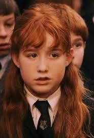

Hannah Abbott a loyal member of Dumbeldore's army, and a prefect.
Birthday: c. 1980, House: Hufflepuff, Parents: Her mother was murdered by Death Eaters in 1996 during the second Wizarding War, Skills: Defensive spells, learned with Dumbledore's Army, Hobbies: Collecting Chocolate Frog cards.
Susan Bones also a member of Dumbledore's army.
Full name: Susan Bones, Birthday: c.1980, House: Hufflepuff, Skills: Defensive spells, learned with Dumbledore's Army.